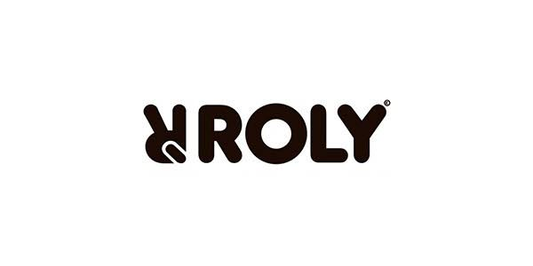
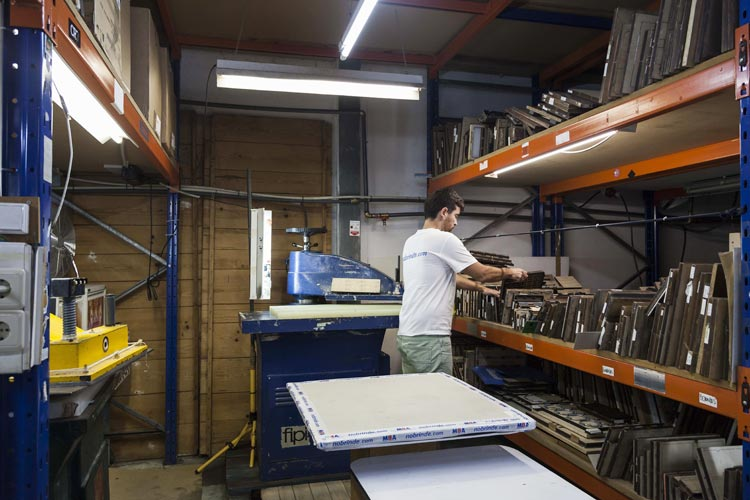

Empresas com atividade documentada nesta área
Exemplos para compreender funções e modelos de trabalho. As atividades são atribuídas às fontes oficiais consultadas; não constituem uma recomendação comercial.
Solo midocean
Países Baixos · sede
Fornecimento, impressão e logística
Identifica instalações próprias de logística e impressão na Polónia. Documenta também dobragem, etiquetas e embalagem, com opções que variam por pedido e região.
Ler o perfil de Solo midocean →Fontes: Solo midocean — Locations · Solo midocean — Special handling

Roly / Gor Factory
Fortuna, Murcia, Espanha · sede da sociedade
Fornecimento de vestuário e distribuição
O site da Gor Factory descreve, para Roly, encomendas por cor e tamanho, consulta de stock e coordenação entre armazém e transportadores.
Ler o perfil de Roly / Gor Factory →Fontes: Roly — Perguntas frequentes · Roly — Identificação da sociedade
Um percurso possível
Depois de escolher o produto e confirmar a disponibilidade, o pedido pode seguir para validação da arte, personalização, controlo, montagem, embalagem e expedição. Controlo significa verificar o resultado face ao que foi definido. Algumas etapas podem ser executadas por empresas diferentes, repetidas ou dispensadas conforme o projeto.

Preparação e expedição
Preparar pode incluir separar variantes, contar unidades, dobrar peças, compor conjuntos, embalar e identificar caixas. Expedir é encaminhar a encomenda para transporte; não equivale à entrega no destino. A informação sobre conteúdo, destino e identificação das caixas acompanha a passagem do armazém para o transportador.
O que varia entre operações
O prazo total pode reunir espera pelo stock, aprovação da arte, produção, preparação e transporte. O país da sede não define esse percurso. Uma expedição internacional pode ter pontos de passagem diferentes de um envio local; compare a operação documentada, os destinos e os responsáveis, sem atribuir qualidade ao território.
Serviço integrado e operador de transporte
Os exemplos usados documentam preparação integrada no fornecimento. Não representam perfis de transportadores ou operadores logísticos independentes. A página de serviços da Solo midocean indica que as opções variam por pedido e região; a disponibilidade precisa de confirmação para cada encomenda.
Fontes e âmbito
Fontes oficiais consultadas para as atividades atribuídas às empresas. As explicações das funções e do percurso são sínteses editoriais; não descrevem um modelo universal nem avaliam o desempenho dos fornecedores.
- Solo midocean — Special handling — consulta: .
- Roly — Perguntas frequentes — consulta: .
- Solo midocean — Locations — consulta: .
- Roly — Identificação da sociedade — consulta: .